A spacecraft with rate or magnetic hysteresis damping.
You can try different kinds of damping. The first is 3-axis damping that applies a damping constant to each axis rate. You should find a constant that approximates whatever damper you have. If everything is working properly the spacecraft will align its torque rod with the Earth's magnetic field.
The second type is magnetic hysteresis damping. Read the headers for RHSHysteresisDamper.m, BFromHHysteresis.m, MagneticHysteresis for more information.
This simulation does not have any disturbances. Run for a small number of orbits to clearly see the hysteresis loops. They are minor loops since the Earth's field is not strong enough to take the rod to saturation. Run for several days to damp the rates close to zero.
Things to try:
1. Try both types of damping.
2. Determine a damping constant that produces the same results as
hysteresis damping.
3. Try different orbits.
4. Try different dipoles.
5. With no damping determine the oscillation frequency of the
spacecraft.
6. See what happens with a rotation rate about the dipole axis.
7. Remove the dipole and initialize with nonzero rates instead.
See also BFromHHysteresis, RHSHysteresisDamper, RHSRigidBodyWithDamping, HysteresisOutput, BDipole, InertiaCubeSat ----------------------------------------------------------------------
Contents
%-------------------------------------------------------------------------- % Copyright (c) 2014 Princeton Satellite Systems, Inc. % All Rights Reserved %-------------------------------------------------------------------------- % Since version 2014.1 %--------------------------------------------------------------------------
Constants
%----------- rE = Constant('equatorial radius earth'); degToRad = pi/180; mu0 = 4e-7*pi;
Simulation parameters
%----------------------- d = RHSRigidBodyWithDamping; nOrbits = 40; % Number of orbits for the simulation d.jD0 = JD2000; % Start date d.mu = Constant('mu earth'); % Earth's gravitational parameter altitude = 300; % Orbit altitude (km) inclination = 45*degToRad; % Orbit inclination (rad) d.dampingType = 2; % 1 is 3-axis damping, 2 is a damping function % Spacecraft with a dipole from a torque rod or permament magnet %--------------------------------------------------------------- d.dipole = [1;0;0]; % in ATM^2 along the x-axis d.uDipole = Unit(d.dipole); %d.dipole = 0*d.dipole; % zero or scale the value [d.inertia, d.mass] = InertiaCubeSat( '3U' ); %d.inertia = d.inertia(1,1)*eye(3); % Make spherical to simplify % Compute the orbit %------------------ el = [rE+altitude inclination 0 0 0 0]; [r,v] = El2RV(el); % Get the starting position and velocity vectors q = QLVLH(r,v); % Quaternion [bI,bIDot] = BDipole(r,d.jD0,v);
Damper parameters
%------------------- if( d.dampingType == 1 ) d.dampingData = 1e-6; % Damping constant d.dampingFun = []; % Not used z = []; % Not used else d.dampingData.Br = 0.004; % Remanence (T) d.dampingData.Bs = 0.025; % Saturation flux density (T) d.dampingData.Hc = 12; % Coercive force (A/m) % Damper rod unit vectors d.dampingData.u = [[0;1;0] [0;1;0] [0;1;0]... [0;0;1] [0;0;1] [0;0;1]]; d.dampingData.u = [eye(3) eye(3)]; % Dimensions are radius 1 mm by 95 mm d.dampingData.v = pi*0.001^2*0.095*ones(1,size(d.dampingData.u,2)); d.dampingFun = @RHSHysteresisDamper; % Damper function uECI = QTForm(q,d.dampingData.u); hMag = Dot(uECI,bI )/mu0; hMagDot = Dot(uECI,bIDot)/mu0; z = BFromHHysteresis( hMag, hMagDot, d.dampingData ); end % Initial state vector %--------------------- omega = [0;-sqrt(d.mu/Mag(r)^3);0]; x0 = [r;v;q;omega;z']; % State vector % Determine the simulation duration %---------------------------------- orbPeriod = Period(el(1)); d.end = nOrbits*orbPeriod;
Run the simulation
%-------------------- disp('Beginning simulation...') outf = @(t,y,flag) HysteresisOutput(t,y,flag,d); opts = odeset('outputfcn',outf,'initialstep',2,'refine',4); rhs = @(t,x) RHSRigidBodyWithDamping( x, t, d); [tout,y] = ode45(rhs, [0 nOrbits*orbPeriod], x0, opts); y = y'; disp('Done') xP = HysteresisOutput([],[],'x'); zP = HysteresisOutput([],[],'z'); tP = HysteresisOutput([],[],'t');
Beginning simulation... 10% finished 20% finished 30% finished 40% finished 50% finished 60% finished 70% finished 80% finished 90% finished Done
Plot
%------ % Labels for the default plots %----------------------------- yL = { 'x (km)' 'y (km)' 'z (km)' 'v_x (km/s)' 'v_y (km/s)' 'v_z (km/s)' ... 'q_s' 'q_x' 'q_y' 'q_z' '\omega_x (rad/s)' '\omega_y (rad/s)' '\omega_z (rad/s)' ... 't_x' 't_y' 't_z' 't_x' 't_y' 't_z' '\theta (deg)',... 'b_x (nT)' 'b_y (nT)' 'b_z (nT)'}; % Time labels %------------ [t, tL] = TimeLabl(tP); kRV = 1: 6; kQ = 7:10; kOmega = 11:13; kTorque = 14:19; kAngle = 20:23; Plot2D( t, xP(kRV,:), tL, yL(kRV), 'Damping Sim: Orbit'); Plot2D( t, xP(kQ,:), tL, yL(kQ), 'Damping Sim: Quaternion'); Plot2D( t, xP(kOmega,:), tL, yL(kOmega), 'Damping Sim: Angular Rate'); Plot2D( t, xP(kTorque,:)*1e6, tL, yL(kTorque), 'Damping Sim: Damping and Dipole Torques (\mu Nm)'); Plot2D( t, xP(kAngle,:), tL, yL(kAngle), 'Damping Sim: Angle to Field and ECI B Field'); Plot2D( t, xP(20,:), tL, yL(20), 'Damping Sim: Angle between Dipole and Field (deg)'); omega = xP(kOmega,:); e = zeros(1,size(omega,2)); for k = 1:size(omega,2) e(k) = 0.5*omega(:,k)'*d.inertia*omega(:,k); end Plot2D(t,e,tL,'Energy (J)','Energy Plot'); % Plot the dampers if there are any %---------------------------------- if( ~isempty(z) ) if( nOrbits > 1 ) f = 's'; else f = ''; end n = length(z); for k = 1:n s = sprintf('Hysteresis loop Over %d Orbit%s, Bar %d',nOrbits,f, k); Plot2D(zP(k+n,:),zP(k,:),'H (A/m)','B (T)',s) s = sprintf('B, H and dH/dt %d Orbit%s bar %d',nOrbits,f, k); j = [k k+n k+2*n]; Plot2D(t,zP(j,:),tL,{'B (T)' 'H (A/m)' 'dH/dt (A/ms)'},s) end end Figui %-------------------------------------- % $Date$ % $Id: 15119a0cb8a12ba25e59c0124ab64bc9e7f56908 $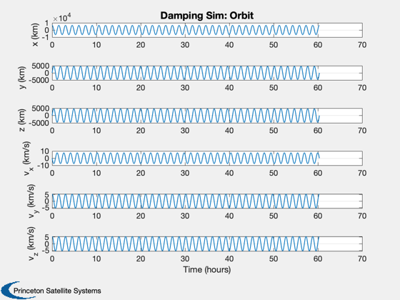 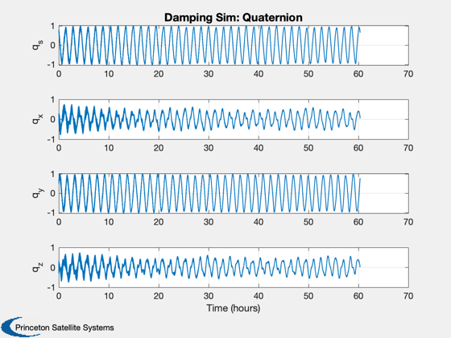
 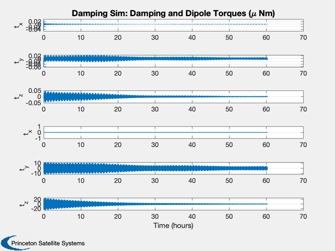 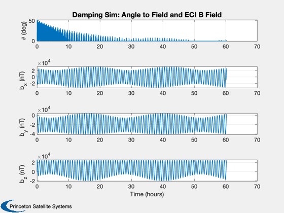 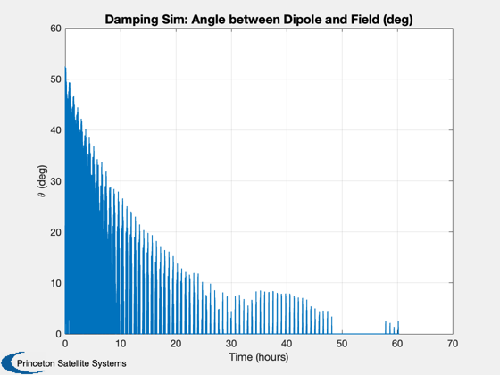 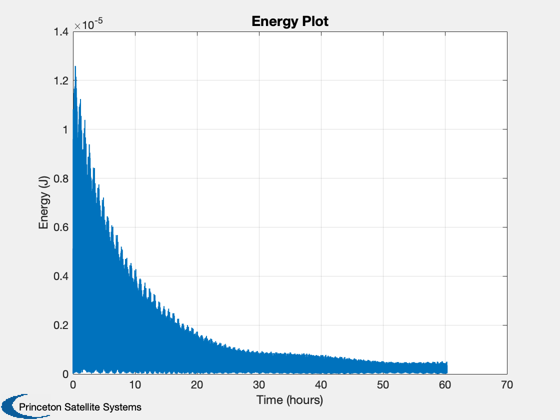
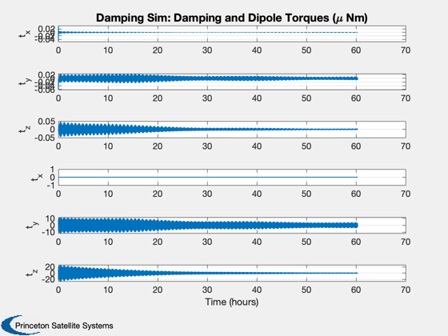 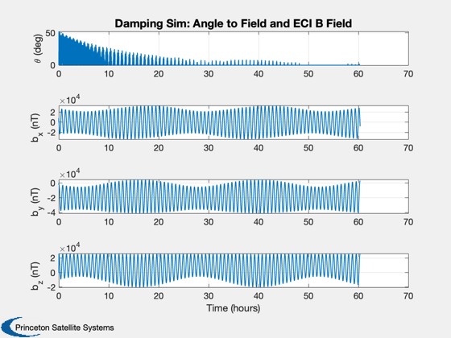 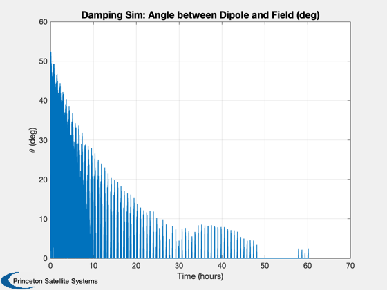 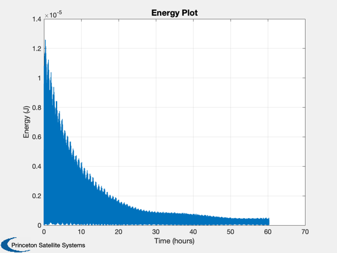  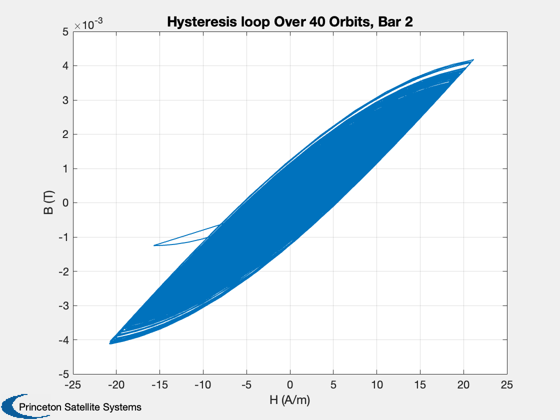 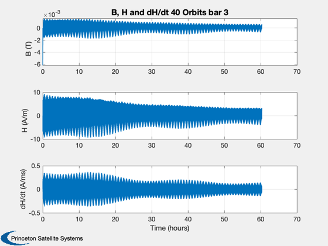 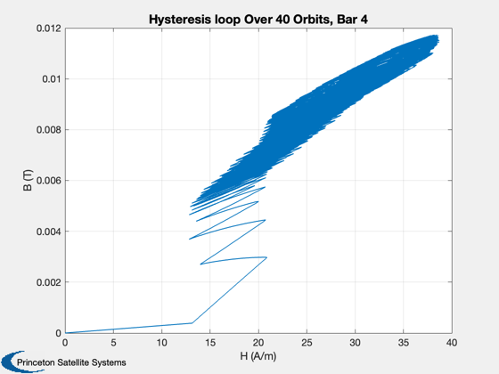 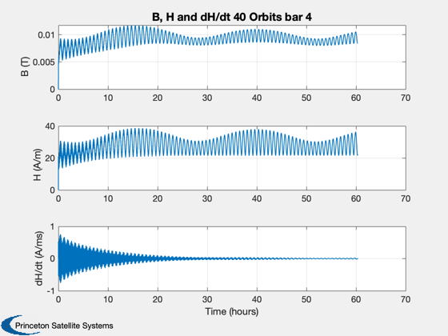 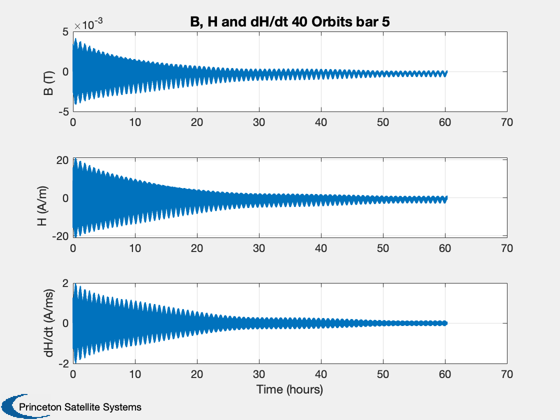 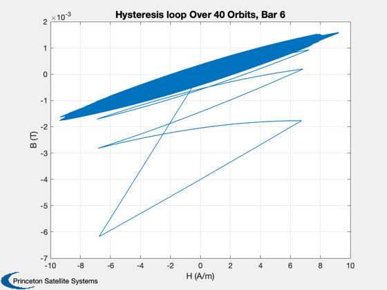
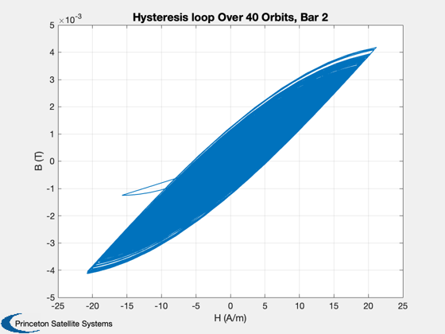 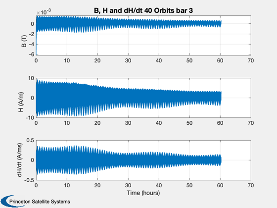 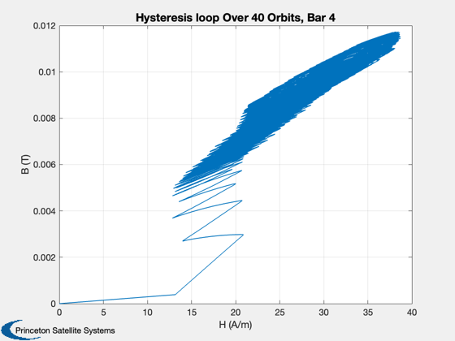 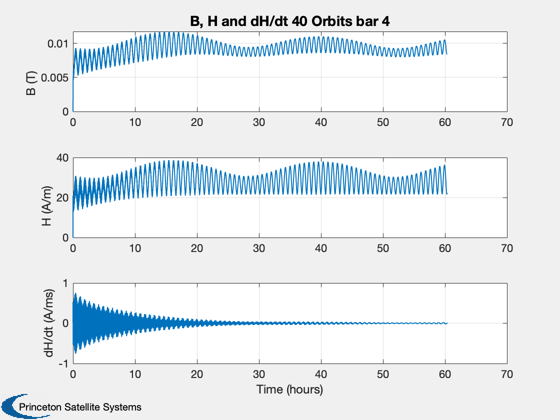 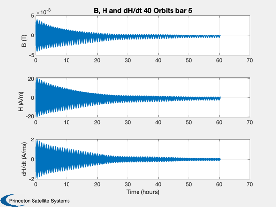 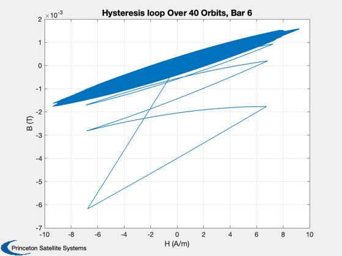  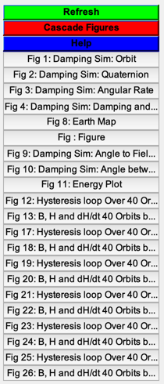
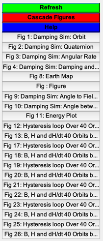